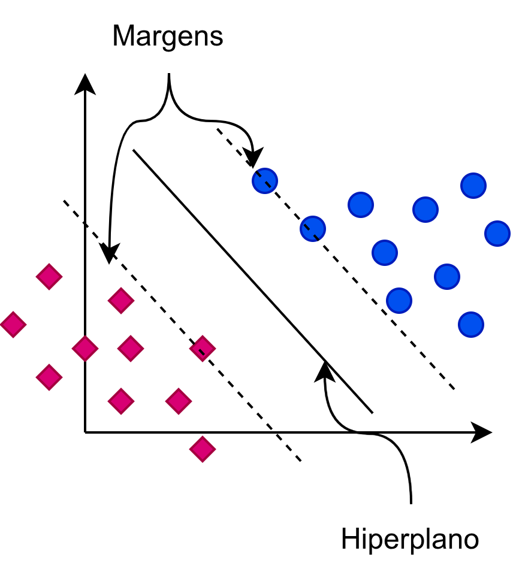
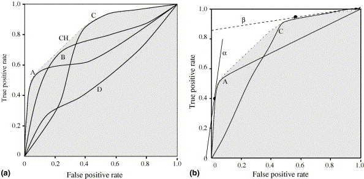

1 Classificação de texto
A classificação de texto é uma das tarefas fundamentais e mais estudadas no Processamento de Linguagem Natural (PLN). Em sua essência, a tarefa consiste em atribuir um ou mais rótulos ou categorias a um documento de texto, com base em seu conteúdo. Essa tarefa, aparentemente simples, é a base para uma vasta gama de aplicações que encontramos em nosso dia a dia como: a organização automática de e-mails em pastas (por exemplo, “Principal”, “Social”, “Promoções”), a identificação do sentimento em uma avaliação de produto (positivo, negativo, neutro) ou a classificação de notícias por tópicos (como “Esportes”, “Política”, “Tecnologia”). Como resultado desta tarefa temos uma coleção de textos organizada de acordo com critérios humanos relevantes para um propósito como o de auxiliar as pessoas a localizar rapidamente a informação de que precisam. Esta tarefa pode, portanto, ser a primeira etapa para as pessoas catalogarem informação. É por este motivo que esta tarefa também pode ser chamada de categorização de texto (Sebastiani, 2002).
A importância da categorização de texto reside em sua capacidade de estruturar a imensa quantidade de dados textuais não estruturados gerados a cada segundo. Como descrito no Capítulo O que é PLN?, um dos grandes desafios da área é justamente criar métodos que permitam aos computadores “entender” e processar a linguagem humana para extrair informações úteis. A categorização é um passo crucial nesse processo, transformando texto livre em informação organizada e facilmente acessível.
A separação de textos em categorias diferentes pode parecer uma tarefa simples à primeira vista; porém, estabelecer as categorias mais adequadas dentro de um conjunto, definir os nomes das categorias, entre outros critérios a serem estabelecidos para os dados, pode consumir muito tempo e demandar conhecimento específico (Freitas Araujo, 2018). Por isso, existe um campo de estudo dedicado a esta organização, chamado Ciência da Informação, que pode abrigar cursos sobre diferentes tipos de catalogação e organização da informação, como Biblioteconomia e Arquivologia, entre outros. Essa área surgiu após a Segunda Guerra Mundial, com o avanço e o desenvolvimento tecnológico (Saracevic, 1996).
Podemos considerar, portanto, a separação de textos em categorias pré-definidas como uma subárea desta grande área, a Ciência da Informação. Com o surgimento da Inteligência Artificial (IA), também por volta da década de 1950 (Haenlein; Kaplan, 2019), foi natural associá-la à crescente quantidade de informação gerada pelos avanços tecnológicos. Assim, a classificação de texto foi uma das primeiras tarefas exploradas em IA por volta de 1960. Maron (1961) propôs classificar um conjunto de resumos de artigos em 32 categorias utilizando como características preditivas as palavras presentes nos resumos do conjunto de treino. Desde então, muitos avanços foram alcançados. Os trabalhos que se seguiram mostraram o lado multifacetado da classificação de texto, por exemplo, aplicando diferentes estratégias de IA para classificar textos de saúde ou jurídicos, ou definindo que um documento pode ser classificado em mais de uma categoria. Com relação ao domínio textual, referimos ao leitor os Capítulos Detecção de Transtornos de Saúde Mental a partir de Texto e Detecção Automática de Notícias Falsas para a classificação de textos no domínio da saúde mental e a detecção de notícias falsas, respectivamente.
Neste capítulo, exploraremos os múltiplos aspectos da categorização de texto, desde seus fundamentos teóricos até suas aplicações práticas, com foco especial nos recursos disponíveis para o português. A seguir, definiremos a taxonomia à qual um conjunto de dados de classificação de texto pode pertencer.
1.1 Taxonomia
O termo “categorização de texto” é frequentemente usado como um guarda-chuva para uma variedade de problemas específicos. Podemos organizar as tarefas de categorização com base em diferentes critérios, como a natureza das categorias, a relação entre elas e o objetivo final da aplicação.
Uma primeira grande divisão se dá entre a classificação de tópicos (ou assuntos) e a classificação por metadados. A classificação de tópicos (topic classification) é a forma mais tradicional de categorização, cujo objetivo é identificar o assunto principal de um texto. Por exemplo, um artigo de jornal pode ser classificado como “Ciência” e uma publicação em rede social como “Viagem”. As categorias são definidas pelo conteúdo semântico do documento. Na classificação por metadados, as categorias não se referem ao tópico do texto, mas a um atributo ou metadado associado a esse tópico. Exemplos incluem:
Análise de sentimentos: classificar a polaridade de um texto (e.g., positivo, negativo, neutro), uma tarefa explorada em aplicações de redes sociais, como discutido no Capítulo PLN em Redes Sociais.
Detecção de autoria: identificar o autor de um texto com base em seu estilo de escrita (Varela et al., 2011).
Detecção de spam: diferenciar e-mails legítimos de spam (Almeida; Yamakami, 2012).
Detecção de notícias falsas: classificar uma notícia como legítima ou falsa, uma aplicação de grande impacto social abordada no Capítulo Detecção Automática de Notícias Falsas.
Neste capítulo não trataremos deste tipo de classificação, porém essa distinção é crucial, pois os tipos de características (features) relevantes para cada tarefa podem variar drasticamente. Enquanto a classificação de tópicos depende muito do vocabulário específico do domínio, a análise de sentimentos pode depender de palavras com carga afetiva e a detecção de autoria, de padrões estilísticos sutis.
A estrutura e a relação entre as categorias também definem diferentes tipos de problemas, como veremos em detalhe na próxima seção, abordando desde a simples classificação binária até cenários mais complexos, como a classificação hierárquica e multirrótulo.
1.2 Tipos de problemas
A taxonomia apresentada na seção anterior descreve o propósito da categorização. Agora, vamos formalizar os tipos de problemas com base na estrutura do conjunto de categorias \(C\) (também chamado de espaço de rótulos ou label space). A definição do problema tem impacto direto na forma como o modelo é projetado, treinado e avaliado (como veremos nas Seções Métodos de classificação e Avaliação de modelos).
Para treinar e avaliar os modelos que executam essas tarefas, dependemos fundamentalmente de conjuntos de dados anotados, os chamados corpora, um conceito central detalhado no Capítulo Conjunto de dados, dataset e corpus. A estrutura e a relação entre as classes (categorias ou rótulos) também definem diferentes tipos de problemas. A identificação do tipo de classificação de texto é importante para levantar os principais desafios e as melhores estratégias para solução. Para isso, é necessário primeiro identificar o número de classes na tarefa e, em seguida, o número de rótulos por instância.
A Figura 1.1 apresenta um fluxograma que guia a identificação do tipo de classificação a que uma categorização textual pertence. Seja \(D\) um conjunto de documentos e \(C={c_1,c_2, \ldots,c_K}\) um conjunto de \(K\) categorias (rótulos) predefinidas. O objetivo de um classificador \(f\) é aprender uma função de mapeamento \(f:D \rightarrow C'\) que associa um documento \(d \in D\) a um subconjunto de rótulos \(C' \subseteq C\). A natureza desse mapeamento define os problemas descritos a seguir (Aggarwal, 2018; Jurafsky; Martin, 2023).

1.2.1 Classificação binária
É o cenário mais simples e fundamental de categorização. O conjunto de categorias contém exatamente duas classes, \(K=2\) (ou seja, \(C=\{c_1, c_2\}\)), que são mutuamente exclusivas. Neste caso, o classificador aprende uma função \(f:D \rightarrow \{c_1,c_2\}\). Frequentemente, as classes são representadas como \(\{+1,-1\}\) (positivo/negativo) ou como \(\{0,1\}\) (ausente/presente).
Exemplos clássicos: incluem detecção de spam, na qual um e-mail é classificado como “spam” ou “legítimo” (ham); análise de sentimentos (polaridade), na qual uma avaliação de produto ou serviço é “positiva” ou “negativa”; e detecção de notícias falsas, na qual uma notícia pode ser classificada como “legítima” ou “falsa”.
1.2.2 Classificação multiclasse
O conjunto de categorias contém mais de duas classes \((K>2)\), mutuamente exclusivas. Cada documento \(d\) deve estar associado a exatamente uma categoria do conjunto \(C\). Neste caso, o classificador aprende uma função \(f:D \rightarrow C\), com \(|C| = K > 2\).
Exemplos tradicionais incluem: classificação de tópicos de notícias, no qual um artigo de notícia é atribuído a um único assunto, como “Esporte”, “Política” ou “Tecnologia”; análise de sentimentos (granular), na qual uma avaliação de produto ou serviço é classificada como “muito positiva”, “positiva”, “neutra”, “negativa” ou “muito negativa”; e identificação de idioma, que determina se um texto está escrito em “Português”, “Inglês”, “Espanhol” etc (Silva et al., 2017).
1.2.3 Classificação multirrótulo
A classificação multirrótulo rompe a restrição da exclusividade mútua. As categorias não são mutuamente exclusivas, e um documento \(d\) pode ser associado a zero, a um ou a múltiplos rótulos simultaneamente (Tsoumakas; Katakis, 2007).
Exemplos incluem: categorização de artigos científicos, no qual um estudo sobre aprendizado de máquina aplicado à medicina pode receber os rótulos “Inteligência Artificial”, “PLN” e “Saúde”; classificação de conteúdo jurídico, no qual uma peça processual pode ser relevante para múltiplos ramos do direito, como “Direito Civil” e “Direito do Consumidor”; e marcação de publicações em redes sociais, no qual um post sobre uma viagem gastronômica pode ser marcado com tags como “#Viagem”, “#Gastronomia” e “#Férias”.
Este problema é significativamente mais complexo, pois o espaço de saída cresce exponencialmente (\(2^K\) combinações possíveis) e exige métodos específicos, como a Relevância Binária (Binary Relevance) ou algoritmos adaptados que modelam a correlação entre os rótulos (Bittencourt et al., 2020).
1.2.4 Classificação hierárquica
Este é um caso especial de classificação (que pode ser multiclasse ou multirrótulo), em que as próprias categorias estão organizadas em uma estrutura hierárquica, como uma árvore ou um grafo acíclico dirigido. As categorias em \(C\) mantêm relações de superclasse/subclasse (pai/filho). A decisão de classificar um documento em uma categoria mais específica (e.g., “Futebol”) pode depender da classificação na categoria mais geral (e.g., “Esporte”) (Figura 1.2).

Exemplos incluem classificação de produtos, na qual um item em um e-commerce pode ser classificado em “Eletrônicos” \(\rightarrow\) “Áudio e vídeo” \(\rightarrow\) “Fones de ouvido”; classificação de documentos médicos, na qual registros de pacientes ou artigos científicos são classificados de acordo com o uso de taxonomias como a CID (Classificação Internacional de Doenças1) ou a MeSH (Medical Subject Headings2); e taxonomias biológicas, nas quais uma espécie de ser vivo pode ser classificada em Reino, Filo, Classe, Ordem etc.
Abordagens para este problema podem ser planas (flat), ignorando a hierarquia (i.e., tratando-a como um problema multiclasse/multirrótulo padrão), ou hierárquicas, que utilizam a estrutura da taxonomia para guiar o processo de classificação (Silla; Freitas, 2011; Tavares et al., 2018). Neste caso, a classificação hierárquica pode ser resolvida com abordagens top-down (vários classificadores em cascata) ou big-bang (um único classificador que conhece a estrutura).
Compreender qual desses problemas estamos resolvendo é o primeiro passo para selecionar a representação de texto (Seção Representações computacionais de texto), o método de classificação (Seção Métodos de classificação) e as métricas de avaliação (Seção Avaliação de modelos) mais adequados.
1.3 Representações computacionais de texto
Modelos de aprendizado de máquina, como os que veremos na Seção Métodos de classificação, não operam sobre texto puro; exigem entradas numéricas. O processo de conversão de um texto (uma sequência de caracteres) em um vetor numérico — seja ele esparso ou denso — é chamado de representação de texto ou feature extraction (extração de características).
A qualidade dessa representação é fundamental, pois ela deve capturar a informação semântica e discriminativa do documento, filtrando ruídos de modo que o classificador possa encontrar padrões. A evolução das representações de texto é um pilar central da própria evolução do PLN, passando de modelos baseados em contagem a modelos que aprendem o significado a partir do contexto.
1.3.1 Representações distributivas (esparsas)
A primeira abordagem bem-sucedida, que serviu de base para a Recuperação de Informação (ver Capítulo Recuperação de Informação) por décadas, é baseada na Hipótese Distributiva, que, em sua forma mais simples, pode ser resumida como: “você conhecerá uma palavra pela companhia que ela mantém” (Firth, 1957). Embora essa hipótese seja a base de todas as representações modernas, suas primeiras implementações eram baseadas em contagem.
1.3.1.1 Saco de palavras
A representação em saco de palavras ou bag-of-words (BoW) é a forma mais simples de representar um documento de texto. Nela, um texto é dividido em palavras e cada palavra é associada a sua ocorrência ou ao valor de sua frequência nesse texto.
Considere o exemplo a seguir3.
Exemplo 1.1
talvez espante ao leitor a franqueza com que lhe exponho e realço a minha mediocridade
Em um modelo de saco de palavras, o texto é primeiramente dividido em palavras unitárias, separadas por um espaço em branco (processo conhecido como tokenização explicado no Capítulo Sequência de caracteres e palavras), resultando no mapeamento a seguir onde cada palavra é associada a sua frequência de ocorrência.
{ "a": 2, "ao": 1, "com": 1, "e": 1, "espante": 1, "exponho": 1,
"franqueza": 1, "leitor": 1, "lhe": 1, "mediocridade": 1, "minha": 1,
"que": 1, "realço": 1, "talvez": 1}Essa representação ignora completamente a gramática, a sintaxe e a ordem das palavras, tratando o documento apenas como um multiconjunto (um “saco”) de seus termos.
Formalizando, dado um vocabulário \(V\) (o conjunto de todas as palavras únicas do corpus), cada documento \(d\) é representado por um vetor \(v\) de tamanho \(|V|\). Cada posição \(i\) do vetor \(v\) corresponde a um termo \(t_i \in V\), e o valor \(v_i\) é a frequência (contagem) do termo \(t_i\) no documento \(d\).
Essa representação tem a vantagem de ser simples e de apresentar fácil interpretabilidade (é fácil ver quais palavras contribuíram para a classificação) e eficácia surpreendente na classificação de tópicos (onde a presença de palavras-chave é um forte indicador). Por outro lado, os vetores resultantes podem ter elevada dimensionalidade (dezenas de milhares de posições), ser esparsos (a maioria das posições é zero), apresentar perda total da ordem (por exemplo, “o cachorro mordeu o homem” vs “o homem mordeu o cachorro”) e ser incapazes de capturar sinonímia (os vetores para “carro” e “automóvel” são ortogonais, ou seja, totalmente independentes).
1.3.1.2 Term Frequency-Inverse Document Frequency (TF-IDF)
Uma melhoria crucial em relação à contagem bruta é o TF-IDF, que combina Term Frequency – TF (frequência de termo) e Inverse Document Frequency – IDF (frequência inversa de documentos). Essa junção visa dar mais peso a palavras frequentes em um documento específico, mas raras em todos os demais documentos. Palavras muito comuns em toda a coleção (como stopwords “de”, “que”, “o”) recebem um peso baixo, pois não têm poder discriminativo.
O peso de um termo \(t\) no documento \(d\) é dado por:
\[ tfidf(t,d,D) = tf(t, d) \times idf(t, D), \tag{1.1}\]
onde \(tf(t,d)\) é a frequência do termo em \(d\), computada por:
\[ tf(t, d) = \frac{freq_{t,d}}{\sum_{t' \in d} freq_{t',d}}, \tag{1.2}\]
e \(idf(t,D)\) é a frequência inversa do documento no corpus \(D\):
\[ idf(t, D) = \log \frac{N}{n_t} \tag{1.3}\]
Na Equação 1.2, \(freq_{t,d}\) é a frequência de um termo \(t\) no documento \(d\). O denominador \(\sum_{t' \in d} freq_{t',d}\) representa a soma das frequências de todos os termos \(t'\) presentes em \(d\). O objetivo desta soma é normalizar a frequência de um termo em relação ao tamanho do documento. Um documento longo deve apresentar termos com frequência elevada, enquanto um documento pequeno apresenta termos com frequência baixa. Para evitar distorções, a quantidade de termos de um documento é considerada.
Após o cálculo da frequência de um termo, é necessário considerar o quão raro ou frequente ele é em um conjunto de textos \(D\) (Equação 1.3). Para seu cálculo, utilizam-se a quantidade de documentos no corpus (\(N\)) e o número de documentos em \(D\) em que \(t\) ocorre (\(n_t\)).
O resultado dessa representação ainda é um vetor esparso e de alta dimensionalidade, mas os valores são ponderados pela sua relevância informacional, tornando-o uma baseline muito mais robusta para classificadores tradicionais.
Para um arcabouço teórico mais profundo, indicamos ao leitor o conteúdo sobre vetores esparsos (Seção Vetores esparsos). A representação TF-IDF também pode ser utilizada no contexto da Recuperação de Informação (RI). O Capítulo Recuperação de Informação fornece mais detalhes sobre o TF-IDF neste contexto.
1.3.2 Representações distribuídas (densas)
A grande revolução na representação de texto veio com a aplicação de redes neurais para aprender representações, em vez de apenas contar as palavras. Este é o foco da Seção Vetores densos estáticos.
As representações vetoriais são formalmente chamadas de Modelos Semânticos Distribucionais (MSD). Word embeddings (vetores de palavras) gerados por modelos como Word2Vec (Mikolov et al., 2013) e GloVe (Pennington et al., 2014) aprendem vetores densos (normalmente de 50 a 300 dimensões) para cada palavra, em que cada dimensão idealmente representa uma característica semântica da palavra. A principal vantagem dessa representação em relação àquela apresentada anteriormente é que palavras com significados semelhantes (como “carro” e “automóvel”) terão vetores próximos no espaço vetorial.
Contudo, a tarefa de categorização opera sobre documentos, não sobre palavras. Dessa forma, para obter um vetor que represente um documento, as abordagens mais comuns são:
Concatenação: o vetor do documento é obtido a partir da concatenação dos vetores das palavras;
Média de vetores: o vetor do documento é obtido calculando-se a média dos vetores de todas as palavras no documento, elemento a elemento (Jurafsky; Martin, 2026);
Média ponderada: o vetor do documento é obtido como resultado da média ponderada na qual as palavras de maior peso (por exemplo, o TF-IDF) contribuem mais para o vetor final.
As representações distribuídas resolvem o problema da sinonímia, mas ainda sofrem com a perda de ordem e, crucialmente, com a polissemia: a palavra “banco” terá o mesmo vetor em “sentei no banco da praça” e em “fui ao banco sacar dinheiro”. Existem, entretanto, representações distribuídas densas cujo objetivo é representar por completo um documento textual ou frases (Le; Mikolov, 2014). Este tipo de representação, assim como métodos específicos, como Word2Vec, GloVe e FastText, é detalhado na Seção Vetores densos estáticos.
1.3.3 Representações contextuais (modelos de linguagem profundos)
A fronteira atual, que resolve o problema da polissemia, é o uso de modelos de linguagem profundos baseados na arquitetura Transformer, como o BERT (Devlin et al., 2019) e suas variantes (Liu et al., 2019) (RoBERTa, ALBERT e outras).
Esses modelos são pré-treinados em volumes massivos de texto (como discutido no Capítulo Modelos de linguagem) e não geram um vetor fixo por palavra. Em vez disso, eles geram um vetor para cada token (palavra ou subpalavra) que é sensível ao contexto no qual esse token aparece. Neste caso, o vetor de representação da palavra “banco” será diferente nas duas sentenças de exemplo da seção anterior.
Para a tarefa de categorização de textos, temos duas estratégias principais:
Extração de características (feature extraction): o documento é passado pelo modelo pré-treinado (sem modificá-lo), e os vetores de saída são usados como representação. Frequentemente, utiliza-se a representação do token especial
[CLS](no caso do BERT), projetado para agregar o significado de toda a sequência. Alternativamente, pode-se aplicar uma operação de pooling (por exemplo, a média) aos vetores de todos os tokens da sequência. Esse vetor denso e contextual (por exemplo, de 768 dimensões) é então usado como entrada de um classificador clássico4.Ajuste fino (fine-tuning): esta é a abordagem dominante. O modelo de linguagem pré-treinado é “descongelado” e treinado (com uma taxa de aprendizado baixa) juntamente com uma camada de classificação simples (por exemplo, softmax) adicionada ao topo. O modelo inteiro é ajustado para a tarefa específica de categorização. Isso permite que as representações, que eram de propósito geral, se especializem nos padrões discriminativos da base de dados de aplicação.
A ascensão dos modelos de linguagem de larga escala (do inglês, Large Language Models – LLMs), como o GPT e modelos de código aberto (discutidos no Capítulo ChatGPT, MariTalk e outros agentes de conversação), também permite abordagens de zero-shot ou few-shot learning, nas quais o modelo pode categorizar textos com base apenas na descrição das categorias (ou seja, um prompt), sem necessitar de um grande conjunto de treinamento rotulado.
A escolha da representação (Quadro 1.1) depende do problema (Seção Tipos de problemas) e dos recursos disponíveis: o TF-IDF ainda é uma baseline rápida e robusta para tópicos claros; fine-tuning de modelos de linguagem é o estado da arte para a maioria das tarefas que exigem compreensão semântica profunda.
Quadro 1.1 Comparativo das abordagens de representação para classificação de textos
A identificação e a análise dos documentos que se deseja classificar são importantes para determinar o tipo de classificação. Após isso, é necessária a representação destes documentos para a aprendizagem de um modelo.
1.4 Métodos de classificação
Uma vez que o texto foi transformado em uma representação numérica (Seção Representações computacionais de texto), entramos na fase de tomada de decisão. O objetivo desta seção é apresentar os métodos que atuam como o “cérebro” do sistema de categorização, responsáveis por aprender padrões nesses números e atribuir a classe correta a um documento inédito.
Formalmente, o problema de classificação pode ser visualizado como a busca por uma função de mapeamento \(f: D \rightarrow C'\) que associa cada documento \(d \in D\) a \(C' \subseteq C\). Aqui, \(d\) é um documento (um ponto ou um vetor) e \(C'\) é o subconjunto de categorias discretas. Classificar, portanto, nada mais é do que encontrar uma regra — matemática ou lógica — que divida esse espaço de forma que documentos de categorias diferentes fiquem em regiões distintas (Faceli et al., 2025).
Para o leitor que está iniciando na área, é útil pensar em um classificador através de duas fases fundamentais:
Fase de treinamento (aprendizado): o método analisa um conjunto de dados previamente rotulado (o corpus de treinamento, conforme discutido no Capítulo Conjunto de dados, dataset e corpus). Durante esse processo, o modelo tenta ajustar seus parâmetros internos para minimizar os erros de classificação, identificando quais características (palavras, contextos ou padrões) são os melhores indicadores de cada categoria.
Fase de inferência (predição): o modelo, agora “treinado”, recebe um novo documento que ele nunca observou. Ele aplica o que aprendeu para projetar esse documento no espaço de categorias e decide qual rótulo é o mais adequado.
Ao longo das últimas décadas, a área de PLN testemunhou uma evolução fascinante nos métodos de classificação. Partimos de modelos baseados em intuições probabilísticas simples (Gonçalves; Quaresma, 2003; Pinto; Melgar, 2016), passamos por algoritmos que buscam fronteiras geométricas ideais (Gonçalves; Quaresma, 2003; Teixeira et al., 2018) e estruturas de árvores lógicas (Fonseca et al., 2014), até chegarmos às redes neurais profundas (Cortes et al., 2020; Matos et al., 2024) e aos modelos de linguagem de larga escala (LLMs), que operam quase intuitivamente por meio de instruções (Gillin, 2024; Oliveira et al., 2024).
Nesta seção, exploraremos esses métodos, dividindo-os em seus paradigmas fundamentais. Veremos que a escolha do método não depende apenas da precisão desejada, mas também da quantidade de dados disponíveis, da capacidade computacional e do nível de explicabilidade exigido pela aplicação — afinal, em domínios sensíveis como a Saúde (Capítulo PLN na Saúde) ou o Direito (Capítulo PLN no Direito), entender “por que” um modelo tomou uma decisão pode ser tão importante quanto a decisão em si.
1.4.1 Métodos probabilísticos: Naïve Bayes
O método Naïve Bayes (NB) pertence à classe de modelos generativos e baseia-se na aplicação direta do Teorema de Bayes. Apesar de sua simplicidade matemática, ele é eficiente e serve como uma baseline robusta para tarefas como a filtragem de spam (Alberto et al., 2015; Almeida et al., 2011; Almeida et al., 2016), a identificação de fake news (Silva et al., 2020) e fake reviews (Cardoso et al., 2018) e a classificação de tópicos (Gonçalves; Quaresma, 2003).
Para entender o NB, imagine que você está lendo um e-mail e encontra as palavras “promoção”, “desconto” e “clique”. Instantaneamente, sua mente aumenta a probabilidade de que este e-mail seja spam. Se, por outro lado, você encontrar palavras como “aula”, “professor” e “prova”, a probabilidade de que seja um e-mail legítimo cresce. O NB faz exatamente isso: ele conta a frequência com que cada palavra aparece em cada categoria durante o treino e utiliza essas contagens como “evidências” para decidir a classe de um novo texto.
Formalizando, dado um documento \(d\) (que visualizamos como um conjunto de palavras \(w_1, w_2, \dots, w_n\)), queremos encontrar a classe \(c\) que maximiza a probabilidade \(P(c|d)\). Pelo Teorema de Bayes, temos:
\[ P(c|d) = \frac{P(d|c) P(c)}{P(d)} \tag{1.4}\]
Como o denominador \(P(d)\) (a probabilidade do documento ocorrer) é constante para todas as classes, o classificador foca apenas no numerador:
\(P(c)\) (probabilidade a priori): é a probabilidade de uma classe ocorrer antes mesmo de lermos o texto. Se 80% dos e-mails no seu treinamento são spam, \(P(\text{\textit{spam}}) = 0,8\).
\(P(d|c)\) (verossimilhança ou likelihood): é a probabilidade de observarmos aquele conjunto de palavras dentro de uma classe específica.
A dificuldade computacional reside em calcular \(P(d|c)\), ou seja, a probabilidade de uma sequência exata de palavras ocorrer. Para viabilizar o cálculo, o modelo assume a premissa de independência: a presença de uma palavra em um documento é totalmente independente da presença de outras palavras, dada a classe.
Sob essa suposição, a probabilidade conjunta torna-se o produto das probabilidades individuais:
\[ P(d|c) \approx P(w_1|c) \times P(w_2|c) \times \dots \times P(w_n|c) \tag{1.5}\]
Sabemos que esta premissa é falsa na linguagem natural — a palavra “Inteligência” aumenta muito a chance da palavra seguinte ser “Artificial”. No entanto, mesmo sendo “ingênuo”, o modelo preserva a força relativa das evidências, o que o torna preciso na prática.
Ao implementar o NB, há dois desafios clássicos que precisam de atenção (Manning et al., 2008):
O problema da divisão por zero (suavização de Laplace): se uma palavra \(w\) nunca apareceu na classe “Esportes” durante o treino, sua probabilidade \(P(w|Esportes)\) será 0. Como estamos multiplicando probabilidades, um único zero anularia todo o cálculo. Para resolver isso, adicionamos 1 ao contador de todas as palavras (técnica de suavização de Laplace), garantindo que nenhuma probabilidade seja nula.
Espaço de logaritmos: multiplicar muitas probabilidades pequenas (ex.: \(0,0001 \times 0,0002\)) pode levar a erros de precisão numérica. Por isso, na prática, os logaritmos das probabilidades são somados: \(\log(P(c|d)) \propto \log(P(c)) + \sum \log(P(w_i|c))\).
O NB é, portanto, um exemplo de como uma modelagem estatística simplificada pode oferecer excelente desempenho a baixo custo computacional, capaz de processar milhões de documentos em segundos (Freitas et al., 2019).
1.4.2 Métodos baseados em distância: K-vizinhos mais próximos
O método \(k\)-vizinhos mais próximos (do inglês, K-Nearest Neighbors – KNN) adota uma abordagem intuitiva e geométrica para a classificação (Cover; Hart, 1967). Diferente de outros métodos que tentam criar um modelo matemático abstrato sobre os dados, o KNN baseia-se na premissa de que “documentos semelhantes tendem a pertencer à mesma categoria”.
Intuitivamente, imagine que você está em uma biblioteca imensa e encontra um livro sem capa nem título. Para descobrir o assunto dele, você olha para os livros guardados em posições imediatamente ao redor. Se a maioria dos vizinhos próximos trata de “Cálculo”, é muito provável que o livro misterioso também pertença a essa categoria.
O KNN é classificado como um algoritmo de aprendizado preguiçoso (lazy), pois não possui uma fase de treinamento explícita. Ele simplesmente armazena todos os exemplos de treinamento na memória. O verdadeiro trabalho ocorre apenas no momento da predição, quando o algoritmo compara o novo documento com todos os documentos armazenados.
O processo de classificação de um novo documento \(d\) segue três passos:
Cálculo de distância: o método calcula a distância (ou similaridade) entre o vetor de \(d\) e todos os vetores dos documentos do conjunto de treinamento.
Seleção dos vizinhos: o método identifica os \(k\) documentos mais próximos (vizinhos).
Votação majoritária: o método atribui, ao documento \(d\), a classe que aparece com maior frequência entre esses \(k\) vizinhos.
No primeiro passo, em problemas de computação tradicionais (que envolvem dados tabulares), a distância euclidiana5 é a mais utilizada. No entanto, em textos, ela apresenta uma falha crítica: a sensibilidade ao tamanho do documento. Dois textos sobre o mesmo tema, mas com tamanhos muito diferentes, teriam uma distância euclidiana elevada, mesmo sendo semanticamente idênticos. Por isso, na categorização de texto, preferimos a similaridade de cosseno, discutida no Capítulo Representação vetorial e semântica distribucional. Ela mede o ângulo entre dois vetores, considerando a orientação e não a magnitude. Isso garante que a comparação seja feita com base na proporção de palavras, tornando o modelo invariante ao tamanho do texto.
A escolha do valor do hiperparâmetro \(k\) (para o segundo passo) é o principal desafio deste método. Geralmente, utiliza-se um valor de \(k\) ímpar para evitar empates em classificações binárias:
Se \(k=1\), o modelo fica muito sensível a ruídos ou erros de rotulação no treino (um vizinho “errado” define a classe).
Se \(k\) for muito grande, o modelo pode perder a capacidade de capturar nuances locais e pode ser dominado pelas classes majoritárias (aquelas que possuem mais documentos no total).
O KNN é valorizado por ser não-paramétrico, o que significa que ele não assume nenhuma distribuição específica para os dados — ele se adapta perfeitamente a fronteiras de decisão complexas e irregulares. Contudo, sua principal limitação no contexto de PLN é a eficiência. Como ele precisa comparar cada novo documento a toda a base de dados, o tempo de resposta cresce linearmente com o tamanho do corpus. Para aplicações que exigem baixa latência ou lidam com milhões de documentos, o custo computacional e de memória pode ser proibitivo, o que exige o uso de estruturas de dados avançadas para busca aproximada de vizinhos (como Ball Trees (Omohundro, 1989) ou Locality Sensitive Hashing (Indyk; Motwani, 1998)).
1.4.3 Métodos de otimização: Regressão Logística e SVM
Enquanto o Naïve Bayes computa probabilidades e o KNN calcula vizinhanças, os métodos de otimização tentam encontrar uma fronteira de decisão — uma linha, plano ou hiperplano — que separe as categorias de forma ótima no espaço de características. Nesta seção, exploraremos dois dos métodos desse paradigma mais utilizados em PLN: a Regressão Logística e as Máquinas de Vetores de Suporte (SVM) (Faceli et al., 2025).
Apesar do nome sugerir uma tarefa de regressão, a Regressão Logística é um dos métodos de classificação mais robustos e interpretáveis da literatura. No contexto de PLN, ele é frequentemente utilizado para entender quais palavras ou características têm maior peso na decisão de uma categoria. Diferente da Regressão Linear, que pode retornar qualquer valor, a Regressão Logística utiliza a função logística (ou sigmoide) para ajustar o resultado da soma ponderada ao intervalo entre 0 e 1, representando a probabilidade de pertencer à classe (Cox, 1958).
Como destacado por Faceli et al. (2025), a vantagem deste método é a sua interpretabilidade: ao analisarmos os coeficientes (pesos) aprendidos, conseguimos explicar exatamente por que um documento foi classificado em determinada categoria, o que é essencial em domínios como o Direito (Capítulo PLN no Direito).
As Máquinas de Vetores de Suporte (do inglês, Support Vector Machines – SVM) foram, durante anos, o estado da arte na categorização de texto antes da ascensão das redes neurais profundas. O SVM é particularmente eficaz quando lidamos com espaços de alta dimensionalidade, como no caso das representações TF-IDF discutidas na Seção Representações computacionais de texto).
Intuitivamente, imagine que as categorias sejam duas cidades separadas por uma floresta. O SVM não quer apenas desenhar uma linha divisória entre elas; quer construir a estrada mais larga possível que as separe. A linha central dessa estrada é chamada hiperplano de decisão, e as bordas da estrada são chamadas de margens (Figura 1.3).
O objetivo do SVM é maximizar essa margem. Quanto maior o espaço entre a fronteira e os documentos mais próximos de cada classe, maior será a capacidade do modelo de classificar novos documentos corretamente (generalização) (Cortes; Vapnik, 1995).

Um detalhe didático do SVM é que a decisão final não depende de todos os documentos de treino. Ela depende apenas dos documentos que estão “na beira da estrada”, ou seja, nos limites das margens. Esses documentos são os vetores de suporte. Se removermos qualquer outro documento do treino, a fronteira permanece igual; se movermos um vetor de suporte, a fronteira muda.
Muitas vezes, os textos não são linearmente separáveis (não é possível traçar uma linha reta que os divida perfeitamente). O SVM resolve isso ao projetar os dados em um espaço de maior dimensão. Essa transformação matemática é realizada de forma eficiente por meio de funções de kernel, permitindo que o modelo capture relações não lineares complexas entre as palavras.
No uso prático em PLN:
A Regressão Logística é preferida quando a velocidade de treinamento e a interpretabilidade dos pesos das palavras são cruciais.
O SVM é a escolha ideal quando o volume de dados é menor, mas a dimensionalidade é muito alta, oferecendo uma robustez matemática superior contra o sobreajuste (overfitting).
1.4.4 Métodos baseados em árvores e ensembles
Enquanto os modelos anteriores buscam equações matemáticas ou vizinhanças espaciais, os métodos baseados em árvores adotam uma abordagem de divisão e conquista. Eles particionam o espaço de características por meio de uma sequência de perguntas lógicas, criando uma estrutura que se assemelha a um fluxograma de decisão (Faceli et al., 2025).
Uma Árvore de Decisão (Quinlan, 1993) é uma estrutura onde cada nó interno representa um teste sobre uma característica do texto (ex.: “A palavra lucro está presente?”). Cada ramo da árvore representa o resultado do teste (Sim ou Não), e cada nó-folha representa o rótulo da categoria final.
Pense na classificação como um jogo de adivinhação. O modelo tenta fazer a pergunta mais informativa primeiro para eliminar o maior número possível de incertezas. Em um corpus de notícias, a pergunta “O texto contém o termo campeonato?” pode separar quase instantaneamente a categoria “Esportes” das demais.
Para decidir qual palavra usar em cada nó, a árvore utiliza medidas estatísticas de desordem6. A mais comum é a entropia. Se um conjunto de documentos contém textos de várias categorias misturadas, a entropia é alta. O objetivo do algoritmo é escolher uma divisão que resulte em subconjuntos mais “puros” (de menor entropia), aumentando o Ganho de Informação.
A maior vantagem desse método é a explicabilidade: qualquer pessoa consegue seguir o caminho do topo da árvore até a folha para entender a decisão. O risco, porém, é o sobreajustamento: a árvore pode se tornar tão profunda e específica que acaba “decorando” o ruído do treino em vez de aprender padrões gerais. Para mitigar as falhas de uma única árvore, normalmente utilizam-se métodos de ensemble (conjuntos), que combinam as predições de várias árvores para obter um resultado mais robusto e estável. Duas estratégias neste sentido são a Floresta Aleatória e os métodos de boosting.
Uma Floresta Aleatória cria centenas de árvores de decisão distintas. O segredo de sua eficácia é a diversidade:
Cada árvore é treinada em um subconjunto aleatório dos dados (bagging);
Em cada nó, apenas um subconjunto aleatório de palavras é considerado para a divisão.
A decisão final é tomada por votação majoritária. Como destacado por Breiman (2001), essa colaboração entre árvores independentes reduz drasticamente o erro e torna o modelo um dos mais confiáveis para características extraídas manualmente, como as medidas de complexidade textual discutidas no Capítulo Complexidade Textual e suas Tarefas Relacionadas.
Diferentemente das florestas aleatórias, nas quais as árvores crescem em paralelo, no boosting as árvores são construídas sequencialmente. A lógica é: a primeira árvore faz uma predição inicial (que pode ser fraca); a segunda é treinada especificamente para corrigir os erros da primeira, e assim por diante. O XGBoost (Chen; Guestrin, 2016) é uma implementação altamente otimizada desse processo. Ele lida nativamente com dados esparsos (característica comum em BoW/TF-IDF), o que justifica sua alta performance no PLN tradicional, frequentemente vencendo competições de ciência de dados. Em PLN, ele se destaca quando há vetores de características bem definidos ou metadados estruturados.
Embora as árvores tenham dificuldade em lidar diretamente com vetores TF-IDF de altíssima dimensão (em que a maioria dos valores é zero), elas são altamente eficientes quando o problema envolve a combinação de texto com dados estruturados (e.g. classificar um anúncio com base no texto da descrição e no preço do produto) ou quando a interpretabilidade das regras de negócio é um requisito legal.
1.4.5 Métodos conexionistas: Redes neurais e Deep learning
Os métodos conexionistas, inspirados na estrutura biológica do cérebro, representam uma mudança de paradigma na categorização de texto. Enquanto os métodos anteriores dependem de uma representação de entrada fixa, como o TF-IDF, as redes neurais são capazes de aprender características (feature learning) e extrair padrões complexos e semânticos diretamente dos dados brutos. A unidade básica desta abordagem é o neurônio artificial, que realiza uma soma ponderada de suas entradas e aplica uma função de ativação não linear (Faceli et al., 2025). Para a categorização de texto, o modelo mais simples é o Multilayer Perceptron (MLP) (Figura 1.4).
Intuitivamente, imagine que a primeira camada da rede observa palavras individuais, a segunda camada combina essas palavras em sentenças curtas e a terceira camada identifica conceitos abstratos (como “ironia” ou “urgência”). Ao final, a rede decide a categoria com base nessas abstrações aprendidas durante o treinamento.

Em vez de contagens esparsas, as redes neurais frequentemente utilizam camadas de embeddings (como detalhado no Capítulo Representação vetorial e semântica distribucional). Essas camadas transformam palavras em vetores densos que capturam afinidade semântica. A rede ajusta seus pesos por meio do algoritmo de retropropagação (backpropagation), minimizando o erro entre a predição e o rótulo real. A seguir uma breve explicação das principais arquiteturas existentes.
Redes neurais convolucionais (CNN).Originalmente propostas para o processamento de imagens, as CNNs foram adaptadas com sucesso para o processamento de texto (Kim, 2014). Elas funcionam como “detectores de \(n\)-gramas” automáticos.
Uma CNN desliza janelas (filtros) sobre o texto. Um filtro pode se especializar em detectar a expressão “muito caro”, enquanto outro pode focar em “excelente atendimento”. A rede não se importa de onde essas expressões aparecem no documento; ela apenas registra que ocorreram e as utiliza para classificar o sentimento ou o tópico.
Redes recorrentes (RNN) e LSTMs. A linguagem humana é inerentemente sequencial e a ordem das palavras altera o sentido (e.g. “O gato caçou o rato” vs “O rato caçou o gato”). As Redes Neurais Recorrentes (RNNs) foram projetadas para lidar com essa característica, mantendo um “estado oculto” que serve como uma memória do que foi lido anteriormente.
Como as RNNs tradicionais sofrem com o esquecimento de informações distantes, a arquitetura Long Short-Term Memory (LSTM) (Hochreiter; Schmidhuber, 1997) foi proposta para resolver esse problema introduzindo “portões” (gates) que controlam o que deve ser lembrado e o que deve ser descartado. A principal vantagem é que elas conseguem entender que uma negação no início de um parágrafo longo afeta o sentido de uma palavra no final. Devido ao alto desempenho em diversas tarefas de PLN, elas foram o padrão-ouro para categorização de documentos longos até a consolidação dos Transformers.
1.4.6 Modelos de linguagem
A grande vantagem desses métodos é a flexibilidade. Podemos combinar CNNs e LSTMs para criar modelos híbridos que capturam tanto padrões locais quanto dependências globais. No entanto, o treinamento dessas redes do zero exige grandes volumes de dados rotulados. Essa limitação preparou o terreno para o uso de modelos pré-treinados, onde redes neurais profundas (os Transformers) aprendem a língua em corpora massivos antes de serem ajustadas para a tarefa de categorização, como veremos na próxima seção e no Capítulo Modelos de linguagem.
1.4.7 Redes com atenção: Transformers
Se as CNNs focam em padrões locais e as RNNs em sequências, a arquitetura Transformers (ou rede de transformadores) (Vaswani et al., 2017) introduziu uma abordagem que mudou permanentemente o PLN: o mecanismo de auto-atenção (do inglês, self-attention). Esta arquitetura abandonou a recorrência e a convolução em favor de uma estrutura que processa todas as palavras de um documento simultaneamente.
Imagine que, ao ler uma frase, você pudesse projetar um “holofote” sobre as palavras mais importantes para entender o sentido de uma palavra específica. Na frase “O banco da praça estava quebrado”, ao ler a palavra “banco”, seu cérebro se concentra em “praça” para entender que se trata de um assento, e não de uma instituição financeira. Uma rede de transformadores faz exatamente isso através da autoatenção: ela calcula o peso (a importância) de cada palavra do texto em relação a todas as outras, criando uma representação contextualizada.
Para a tarefa de categorização, o modelo mais emblemático é o BERT (Bidirectional Encoder Representations from Transformers) (Devlin et al., 2019). Diferentemente de modelos que leem o texto da esquerda para a direita, o BERT lê o texto em ambas as direções simultaneamente, o que lhe permite capturar o contexto completo de cada termo.
Para classificar um texto com o BERT, utilizamos um procedimento específico:
O token [CLS]: adicionamos um token especial chamado
[CLS](de classification) no início de cada documento;Agregação de sentido: após passar por todas as camadas de atenção da rede, o vetor resultante deste token
[CLS]funciona como um “resumo” matemático de todo o documento;Camada de saída: adicionamos uma camada densa simples (como uma Regressão Logística) que processa este vetor para determinar a categoria final.
Diferente das LSTMs, que processam o texto palavra por palavra e podem “esquecer” o início de documentos longos, as redes de transformadores mantêm o acesso direto a todas as palavras ao mesmo tempo. Além disso, por não ser uma arquitetura sequencial, no treinamento é possível realizar o processamento paralelo em massa, o que viabiliza o treinamento em corpora de escala global (como discutido no Capítulo Modelos de linguagem).
Este método é hoje o ponto de partida para qualquer sistema de categorização de alto desempenho, servindo de base para os modelos que exploraremos na próxima seção.
1.4.8 Classificação via prompt e modelos de linguagem de larga escala (LLMs)
A chegada dos modelos de linguagem de larga escala (LLMs), como as famílias GPT, Llama e a brasileira MariTalk (detalhadas no Capítulo ChatGPT, MariTalk e outros agentes de conversação), introduziu uma nova forma de classificar textos. Nos métodos anteriores, o foco era treinar um modelo específico para uma tarefa; aqui, o foco passa a ser a instrução de um modelo de propósito geral.
Imagine que, em vez de construir uma máquina complexa para separar e-mails, você pudesse simplesmente entregar um documento a um assistente com amplo conhecimento e solicitar:
Quadro 1.2 Exemplo de instrução com zero-shot learning para a categorização de um texto
Neste caso, o assistente usa todo o seu conhecimento prévio sobre o mundo e a língua para tomar a decisão, sem precisar que você mostre exemplos antes.
No paradigma de prompting, não alteramos os pesos do modelo (como fazemos no ajuste fino do BERT). Em vez disso, fornecemos um texto de entrada (o prompt) que contém a descrição da tarefa e o documento a ser classificado.
O principal mecanismo por trás desta abordagem é a capacidade do modelo de realizar o que chamamos de aprendizado em contexto. Existem duas formas principais de aplicar isso à categorização:
Zero-shot learning (Aprendizado sem exemplos): o modelo recebe apenas a instrução e o texto. Exemplo: “Classifique o sentimento deste tweet como Positivo ou Negativo: ‘O suporte técnico resolveu meu problema em minutos!’”.
Few-shot learning (Aprendizado com poucos exemplos): o modelo recebe dois ou três exemplos de textos já classificados antes de solicitar a classificação do novo documento. Isso ajuda o modelo a entender o formato esperado e as sutilezas das categorias (Brown et al., 2020).
Quando possível, a inclusão de bons exemplos (few-shot learning) fornece mais contexto para que o modelo realize a inferência e, portanto, costuma oferecer resultados superiores aos da abordagem zero-shot learning. Veja o exemplo a seguir:
Quadro 1.3 Exemplo de instrução com few-shot learning para a categorização de um texto
Veja que, neste exemplo, foram fornecidos três casos diferentes, um para cada classe. Dessa forma, o modelo pode compreender melhor a tarefa e oferecer um poder preditivo maior. Contudo, é importante destacar que a ordem dos exemplos no prompt pode influenciar a resposta do modelo (problema conhecido como viés de recência), o que constitui um desafio prático real da engenharia de prompt.
Para que os modelos se tornassem bons classificadores por meio de prompt, passaram por um processo chamado instruction tuning (Ouyang et al., 2022). Como discutido no Capítulo Modelos de linguagem, os modelos de linguagem básicos (da primeira geração) são treinados apenas para prever a próxima palavra. Modelos modernos (de larga escala) foram ajustados para seguir ordens humanas, o que os torna capazes de entender restrições complexas na categorização, como: “Classifique este contrato jurídico, mas se houver ambiguidade, atribua o rótulo ‘Revisão Necessária’”.
Esta abordagem resolve um dos maiores gargalos do PLN: a necessidade de dados rotulados por humanos. É possível criar um classificador funcional em minutos. No entanto, é preciso ficar atento a dois pontos críticos:
Custo e latência: rodar um LLM para classificar milhões de documentos é muito mais caro e lento do que usar um Naïve Bayes ou um SVM, por exemplo.
Instabilidade do prompt: pequenas mudanças na forma como escrevemos a instrução podem gerar resultados distintos, um fenômeno que exige técnicas de engenharia de prompt (Kojima et al., 2022).
A categorização via LLMs é ideal para prototipagem rápida, tarefas com categorias altamente subjetivas ou quando não temos dados de treino suficientes para os métodos conexionistas clássicos (Brown et al., 2020; Wei et al., 2022).
1.4.9 Síntese e Recomendação
Para facilitar a escolha do método mais adequado, de acordo com a natureza do problema e os recursos disponíveis, o Quadro 1.4 apresenta uma síntese comparativa dos paradigmas discutidos nesta seção.
Quadro 1.4 Quadro comparativo dos métodos de classificação de texto
1.5 Avaliação de modelos
A avaliação de um classificador de texto é o estágio em que verificamos se o aprendizado na fase de treinamento (Seção Métodos de classificação) de fato resultou em um modelo capaz de generalizar para dados nunca vistos. Como discutido no Capítulo Avaliação de tecnologias de linguagem, a escolha de uma métrica isolada pode ser enganosa. Portanto, é necessário um protocolo de validação robusto para garantir que o desempenho reportado seja estatisticamente confiável e livre de vícios.
1.5.1 Metodologias de validação
O princípio fundamental da avaliação é a separação entre os dados usados para o aprendizado e os usados para a medição do desempenho. Caso o modelo seja testado com os mesmos dados de treinamento, estaríamos medindo apenas sua capacidade de memorização (overfitting) e não de categorização.
1.5.1.1 Divisão por repartição (Hold-out)
A forma mais comum de validação, especialmente em grandes corpora ou ao utilizar modelos de Deep Learning (Subseção Métodos conexionistas: Redes neurais e Deep learning), é a divisão simples em subconjuntos. A literatura recomenda, usualmente, uma proporção de 80% para treino e 20% para teste (Murphy, 2012), embora variações como 70/30 também sejam frequentes.
Para um ajuste fino de modelos, como a escolha de hiperparâmetros (o valor de \(k\) no KNN ou o learning rate em LLMs), subdividimos o treinamento para criar um conjunto de Validação. Assim, temos três divisões do conjunto de dados:
Treinamento: partição dos dados utilizada para ajustar os pesos do classificador.
Validação: partição dos dados usada para escolher a melhor configuração do modelo.
Teste: partição dos dados utilizada para a avaliação final e definitiva do desempenho.
1.5.1.2 Validação cruzada (Cross-Validation)
Quando o conjunto de dados é pequeno, a divisão simples pode gerar resultados instáveis dependendo de quais documentos caíram no teste. A Validação Cruzada de \(k\) partições (\(k\)-fold cross-validation) resolve isso ao dividir os dados em \(k\) subconjuntos (folds). O experimento é repetido \(k\) vezes: em cada rodada, uma partição diferente é usada para teste e as outras \(k-1\) para treinamento.
Por exemplo, em um corpus de 500 notícias dividido em 5 partições (\(k=5\)), cada partição teria 100 documentos. Na primeira rodada, a Partição 1 é o teste e as outras 4 partições são usadas para treinamento; na segunda, a Partição 2 é o teste, e assim sucessivamente. Ao final, reportamos a média e o desvio padrão dos resultados, o que nos dá uma visão da variância e da estabilidade do modelo frente a diferentes recortes dos dados.
1.5.1.3 Estratificação e Significância
Um aspecto crítico no PLN é o desequilíbrio de classes. Em um portal de notícias, pode haver muito mais textos sobre “Política” do que sobre “Astronomia”. Se a divisão dos dados for feita de forma puramente aleatória, corremos o risco de a partição de teste não conter nenhum exemplo de uma classe rara. Para evitar isso, utilizamos o Particionamento Estratificado, que garante que a proporção original de cada categoria seja mantida em todos os subconjuntos de treino e de teste.
Para comparar se um modelo é genuinamente superior a outro, além da média, utilizamos técnicas como o bootstrapping. Nesta técnica, geramos múltiplas amostras aleatórias com reposição a partir do conjunto original (Efron; Tibshirani, 1993). Isso nos permite calcular intervalos de confiança e afirmar, com suporte estatístico, se a diferença de desempenho entre, por exemplo, um SVM e um Naïve Bayes, não ocorreu meramente ao acaso.
1.5.2 Métricas de desempenho
Para quantificar a eficácia, utilizamos métricas derivadas da Matriz de Confusão. Ela é uma tabela que cruza as predições do modelo com os rótulos reais, conforme ilustrado na Tabela 1.1.
| Classe Real \Predita | Classe A | Classe B | Classe C |
|---|---|---|---|
| Classe A | 50 (VP) | 2 (FN) | 3 (FN) |
| Classe B | 4 (FP) | 45 | 6 |
| Classe C | 1 (FP) | 5 | 49 |
A partir da matriz, definimos três conceitos fundamentais para cada classe:
Verdadeiro Positivo (VP): documentos da classe A corretamente classificados como A.
Falso Positivo (FP): documentos de outras classes classificados erroneamente como A (“falso alarme”).
Falso Negativo (FN): documentos que eram da classe A, mas o modelo atribuiu-os a outra categoria (“omissão”).
Idealmente, a matriz de confusão deve conter a maior quantidade de instâncias na diagonal principal, indicando que o modelo classificou a maior parte das instâncias na classe correta. A partir da matriz de confusão é possível definir a acurácia, uma das métricas mais usadas para avaliar o desempenho de um modelo em classificação. O objetivo da acurácia é medir a taxa global de acertos a partir da seguinte equação \(Acur\acute{a}cia = \frac{VP + VN}{VP + VN + FP + FN}\).
1.5.2.1 Precisão, Revocação e Medida-F
Diferente da Acurácia, que mede apenas a taxa global de acertos, as seguintes métricas são mais informativas:
Precisão (\(P\)): proporção de acertos nas predições de uma classe. Indica a confiabilidade do modelo ao atribuir um rótulo. \[P = \frac{VP}{VP + FP}\]
Revocação (\(R\)): proporção de documentos de uma classe que o modelo conseguiu recuperar. Indica a abrangência (ou cobertura) do modelo. \[R = \frac{VP}{VP + FN}\]
Medida-F1 (\(F_1\)): média harmônica entre Precisão e Revocação, equilibrando os dois aspectos. A média harmônica (e não a aritmética) é utilizada para punir valores extremos. Se um modelo tem Precisão 1.0 e Revocação 0.0, a média aritmética seria 0.5 (enganosa), enquanto a média harmônica seria 0 (realista). \[F1 = 2 \times \frac{P \times R}{P + R}\]
1.5.2.2 Agregação: Macro e Micro
Em problemas multiclasse, existem duas formas de resumir o desempenho global:
Macro-Média: calcula a métrica para cada classe individualmente e calcula a média simples. Trata todas as classes como igualmente importantes, sendo a melhor escolha para avaliar o desempenho em classes raras.
Micro-Média: agrega as contagens globais de VP, FP e FN de todas as classes antes do cálculo. É dominada pelas classes mais frequentes, o que reflete o desempenho médio por documento.
1.5.3 Análise via Curva ROC e AUC
A Curva ROC (Receiver Operating Characteristics) é uma ferramenta visual para analisar o desempenho de classificadores probabilísticos (como a Regressão Logística ou o Naïve Bayes), variando o limiar de decisão \(t\) (Fawcett, 2006). A curva coloca em gráfico a Taxa de Verdadeiros Positivos (\(TPR = \frac{VP}{VP+FN}\)) no eixo \(Y\) e a Taxa de Falsos Positivos (\(FPR = \frac{FP}{FP+VN}\)) no eixo \(X\). Um classificador perfeito alcançaria o canto superior esquerdo (100% de acerto com 0% de alarme falso). A Figura 1.5 ilustra dois exemplos de curvas ROC de diferentes modelos extraídos de (Fawcett, 2006). Visualmente, quanto mais próxima a curva estiver do canto superior esquerdo do gráfico, melhor o desempenho do modelo, pois isso indica uma alta taxa de verdadeiros positivos e uma baixa taxa de falsos positivos. Na Figura 1.5 (a), por exemplo, nota-se que as curvas de diferentes classificadores se cruzam; isso implica que um modelo pode ser superior a outro dependendo do limiar de decisão escolhido ou das restrições de custo do problema. Já a Figura 1.5 (b) demonstra o conceito de Convex Hull, que representa o limite superior de desempenho possível ao combinar diferentes modelos.

Fonte: (Fawcett, 2006)
Para resumir essa curva em um único valor, utilizamos a AUC (Area Under the Curve). Um valor de \(1,0\) indica separação perfeita, enquanto \(0,5\) indica um desempenho equivalente ao acaso. A AUC é especialmente útil em PLN para comparar modelos em tarefas de detecção binária, como a identificação de notícias falsas Capítulo Detecção Automática de Notícias Falsas.
1.6 Recursos em português
A aplicação prática dos métodos de categorização para a língua portuguesa exige recursos capazes de captar as nuances morfossintáticas e semânticas da nossa língua. Como discutido no Capítulo Conjunto de dados, dataset e corpus, a qualidade do modelo é diretamente proporcional à qualidade dos dados de treino. Nesta seção, detalhamos os principais conjuntos de dados, modelos pré-treinados e ferramentas disponíveis para o processamento do português brasileiro.
1.6.1 Conjuntos de dados para categorização
A comunidade brasileira de PLN tem sido prolífica na criação de recursos que abrangem desde a classificação de tópicos tradicionais até tarefas complexas de inferência e detecção de viés. A Tabela 1.2 sintetiza alguns desses recursos, detalhando a tarefa, o número de classes e, quando disponível, o desempenho de referência.
| Nome | Tarefa | Classes | Resultados |
|---|---|---|---|
| CHAVE (Santos; Rocha, 2004) | Classificação multirrótulo de notícias | 9 | – |
| Fake.Br (Monteiro et al., 2018) | Classificação de notícias (falsas/reais) | 2 | Acurácia/F1: 0,950 (Pires et al., 2024) |
| B2W-Reviews01 (Real et al., 2019) | Críticas de consumidores (escalas de 1 a 5) | 5 | – |
| UTLCorpus (Sousa et al., 2019) | Utilidade de críticas (apps e filmes) | 2 | ROC-AUC: 97,1 (apps) / 92,4 (filmes) (Souza; Filho, 2022) |
| Decisões Corte (Lage-Freitas et al., 2019) | Sumários judiciais com decisões | 3 | F1: 0,80 |
| ASSIN 2 (Real et al., 2020) | Inferência textual (premissa/hipótese) | 2 | F1: 0,89 (Silva et al., 2023) |
| HateBR (Vargas et al., 2022) | Discurso de ódio no Instagram | 2 | F1: 0,85 |
| FactNews (Vargas et al., 2023) | Viés vs. Factualidade e tipo de viés | 2 / 12 | F1: 0,88 / 0,67 |
| LegiSubject-Br (Nunes, 2024) | Projetos de lei (multirrótulo) | 59 | – |
No domínio “Jornalístico e Combate à Desinformação”, o CHAVE (Santos; Rocha, 2004) é um marco histórico no português, oferecendo um desafio de classificação multirrótulo em notícias. No cenário contemporâneo de combate à desinformação (Capítulo Detecção Automática de Notícias Falsas), o Fake.Br (Monteiro et al., 2018) consolidou-se como um recurso essencial, apresentando resultados de alto desempenho com modelos modernos, como indicado por Pires et al. (2024).
Em “Análise de Sentimento e Consumo”, para o estudo de opiniões, o B2W-Reviews01 (Real et al., 2019) oferece uma granularidade de 5 classes (estrelas), permitindo avaliar a satisfação do cliente. Complementarmente, o UTLCorpus (Sousa et al., 2019) foca não no conteúdo da crítica em si, mas em sua utilidade (helpfulness), um problema de classificação binária que ajuda a filtrar informações relevantes em plataformas de aplicativos e de filmes.
Na área de “Inferência e Fenômenos Sociais”, o ASSIN 2 (Real et al., 2020) desafia os modelos a identificar relações de inferência textual, essenciais para tarefas de semântica profunda. No campo das redes sociais, o HateBR (Vargas et al., 2022) fornece dados para a detecção de discurso de ódio no Instagram, enquanto o FactNews (Vargas et al., 2023) permite classificar o viés em frases, indo além da polaridade para identificar tipos específicos de viés jornalístico.
No “Domínio Jurídico e Legislativo”, os recursos “Decisões da Corte Brasileira” (Lage-Freitas et al., 2019) e LegiSubject-Br-Keywords (Nunes, 2024) são fundamentais para a automação e organização do sistema jurídico. O último destaca-se pela alta complexidade, envolvendo 59 categorias multirrótulo para indexação de projetos de lei.
1.6.2 Modelos de linguagem pré-treinados
A revolução dos Transformers (Subseção Redes com atenção: Transformers) trouxe modelos treinados em volumes massivos de texto em português, fundamentais para os desempenhos reportados na Tabela 1.2.
BERTimbau (Souza et al., 2020): o modelo BERT (Devlin et al., 2019) padrão para o português brasileiro. Treinado no corpus brWaC (Wagner Filho et al., 2018), ele é a base para a maioria dos classificadores de alto desempenho da atualidade.
PTT5 (Carmo et al., 2020): uma versão do T5 (Raffel et al., 2020) que permite abordar a classificação como um problema de geração de texto para texto.
MariTalk7: representa a nova geração de LLMs nacionais, facilitando a classificação via prompt (Subseção Classificação via prompt e modelos de linguagem de larga escala (LLMs)).
1.6.3 Ferramentas e Bibliotecas
Para implementar classificadores com esses recursos, são comumente empregadas as bibliotecas Hugging Face Transformers (para modelos neurais)8, spaCy (para modelos industriais prontos)9 e Scikit-learn (para métodos clássicos e métricas de avaliação)10.
1.7 Desafios e Tendências
Embora a categorização de texto seja uma das áreas mais maduras do PLN, o cenário contemporâneo – marcado pela onipresença de modelos de linguagem de larga escala (LLMs) e pela aplicação de IA em domínios críticos – impõe novos desafios. Nesta seção, discutimos as fronteiras da pesquisa e as tendências que moldarão a próxima geração de sistemas de categorização.
1.7.1 Dinamismo e Desvio de Conceito (Concept Drift)
Modelos de classificação não são estáticos; operam em um mundo em que a linguagem e os conceitos evoluem. O Desvio de Conceito ocorre quando a relação entre as características do texto e as categorias muda ao longo do tempo. Imagine um classificador de notícias políticas treinado em 2010. Seus padrões de vocabulário e de nomes de entidades estarão obsoletos para classificar o cenário de 2026. Em redes sociais, gírias e neologismos surgem semanalmente, exigindo que o sistema de categorização possua estratégias de Aprendizado Contínuo para se adaptar, sem necessidade de ser retreinado do zero constantemente (Silva et al., 2022; Silva; Almeida, 2021).
1.7.2 Escalabilidade e Eficiência energética
A escalabilidade permanece como um dos desafios centrais na categorização de textos, especialmente diante da necessidade de processar documentos cada vez mais extensos e volumes massivos de dados (Minaee et al., 2021). Embora a evolução dos modelos de linguagem de larga escala (LLMs) tenha permitido a expansão da janela de contexto, observa-se que a eficácia preditiva e a performance do modelo tendem a degradar à medida que o tamanho da entrada aumenta (Dong et al., 2024).
Paralelamente ao desafio técnico, o debate sobre a IA Verde (Green AI) tornou-se fundamental para a sustentabilidade da área (Schwartz et al., 2020). Sistemas que utilizam modelos com bilhões de parâmetros exigem infraestrutura computacional de alto desempenho e um consumo energético que pode ser proibitivo para muitas instituições. Mesmo modelos recentes e otimizados para tarefas de raciocínio, como os da família Qwen (Bai et al., 2023), ainda demandam um consumo de energia considerável, evidenciando que a busca por um equilíbrio entre alto desempenho e eficiência operacional é a nova fronteira no desenvolvimento de tecnologias de linguagem.
1.7.3 Explicabilidade e Interpretabilidade (XAI)
À medida que migramos de modelos lineares para redes neurais profundas e LLMs, ganhamos em precisão, mas perdemos em transparência. Em domínios sensíveis como a saúde ou o direito, uma classificação sem justificativa é insuficiente. A área de IA Explicável (XAI) busca desenvolver métodos que permitam entender por que um modelo atribuiu um rótulo específico. Técnicas como mapas de atenção (que mostram quais palavras o Transformer priorizou) ou métodos de atribuição de características (como LIME (Ribeiro et al., 2016) ou SHAP (Lundberg; Lee, 2017)) são essenciais para que o especialista humano possa confiar nas decisões automáticas e auditar as decisões automáticas. Embora para texto, estudos indicam que estes métodos se mostram pouco confiáveis (Létoffé et al., 2025). Modelos transparentes são um objetivo que muitos pesquisadores desejam e, portanto, ainda um caminho aberto de pesquisa em PLN.
1.7.4 Ética, Equidade (Fairness) e Mitigação de vieses
Como discutido no Capítulo Questões éticas em IA e PLN, modelos de PLN aprendem com dados gerados por humanos, o que pode significar que herdam e amplificam preconceitos históricos de gênero, raça ou classe. Classificadores de currículos ou de sentimentos podem apresentar disparidades de desempenho ou rotulações injustas devido a vieses nos corpora de treino. A tendência atual é o desenvolvimento de benchmarks de equidade específicos para o português brasileiro e de técnicas de desenviesamento (debiasing) que garantam que a categorização seja justa para todos os grupos demográficos.
1.7.5 Soberania digital
A dependência de modelos globais de larga escala suscita questões sobre a soberania dos dados brasileiros. Há um movimento crescente em direção ao desenvolvimento de modelos nacionais robustos, como a MariTalk (Sales Almeida et al., 2024), e de técnicas de destilação de conhecimento (Gou et al., 2021). O objetivo é criar classificadores “pequenos e inteligentes” que consigam manter o desempenho de um LLM, mas que possam ser executados localmente em servidores brasileiros ou dispositivos móveis, com menor latência e custo.
1.7.6 Categorização em baixos recursos e dialetos
O Brasil é um país de diversidade linguística imensa. A maioria dos recursos da Seção Recursos em português foca no português padrão. Um desafio aberto é a categorização eficaz de textos em dialetos regionais, variedades populares e línguas indígenas brasileiras, casos em que a escassez de dados rotulados impede o uso de métodos conexionistas tradicionais (Finger, 2021), exigindo avanços em aprendizado zero-shot e na transferência de conhecimento.
1.8 Referências para aprofundamento
Dada a amplitude e a rápida evolução do campo da classificação de texto, este capítulo oferece uma base sólida, mas não esgota as diversas nuances e os desenvolvimentos recentes da área. Para os leitores que desejam expandir seus conhecimentos teóricos e práticos, recomendamos as obras mencionadas a seguir.
Para uma compreensão aprofundada das bases teóricas e dos métodos clássicos de classificação e recuperação de informação, a obra de Manning; Schütze (1999) permanece como uma referência fundamental, detalhando algoritmos que formaram a base do PLN moderno. Para uma visão panorâmica e atualizada sobre o impacto dos modelos Transformers e das LLMs na tarefa de categorização, o levantamento realizado por Fields et al. (2024) constitui um importante guia para mapear o estado da arte. Por fim, os aspectos técnicos e comparativos entre as estratégias contemporâneas de adaptação de modelos, como o fine-tuning e o instruction-tuning, podem ser aprofundados no trabalho de Chae; Davidson (2025).
Sistema de classificação mantido pela OMS para codificação de doenças e problemas de saúde. Disponível em: http://www2.datasus.gov.br/cid10/V2008/cid10.htm↩︎
Vocabulário controlado desenvolvido pela National Library of Medicine dos EUA para indexação de artigos biomédicos. Disponível em: https://www.nlm.nih.gov/mesh/meshhome.html↩︎
Frase extraída do livro Memórias Póstumas de Brás Cubas e livremente adaptada para o português moderno, disponível gratuitamente no Projeto Gutenberg (https://www.gutenberg.org/).↩︎
Em modelos mais recentes (como o RoBERTa), o uso da média dos vetores (conhecida como mean pooling) tem se mostrado mais estável do que o
[CLS]isolado para certas tarefas de categorização↩︎A distância euclidiana entre dois vetores é computada como \(d(u, v) = \sqrt{\sum_{i=1}^n (u_i - v_i)^2}\). Note que o comprimento do vetor não é levado em consideração nesta equação, assim, textos muito grandes, mas parecidos podem produzir similaridade baixa.↩︎
Aqui desordem refere-se a um conceito estabelecido na Teoria da Informação chamado de Entropia de Shannon, que visa quantificar a “impureza” ou a incerteza dos dados (Faceli et al., 2025). Em uma tarefa de classificação de texto, um conjunto de dados com alta “impureza” significa que os elementos de diversas categorias estão misturados e um modelo busca organizar esta “impureza”, tornando os conjuntos mais homogêneos.↩︎